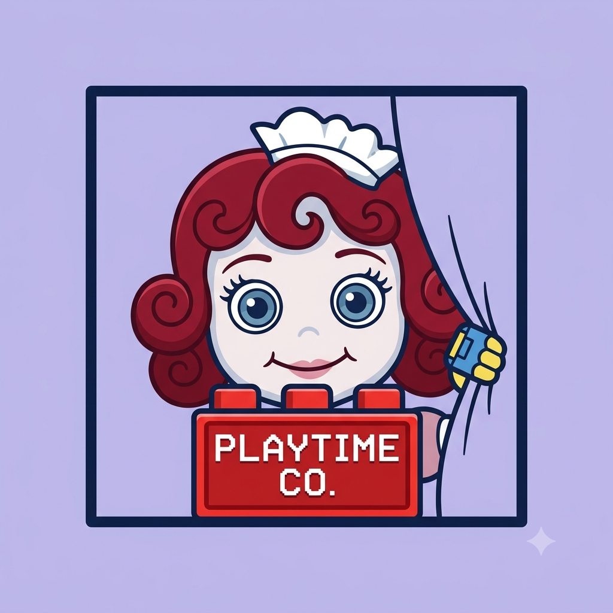
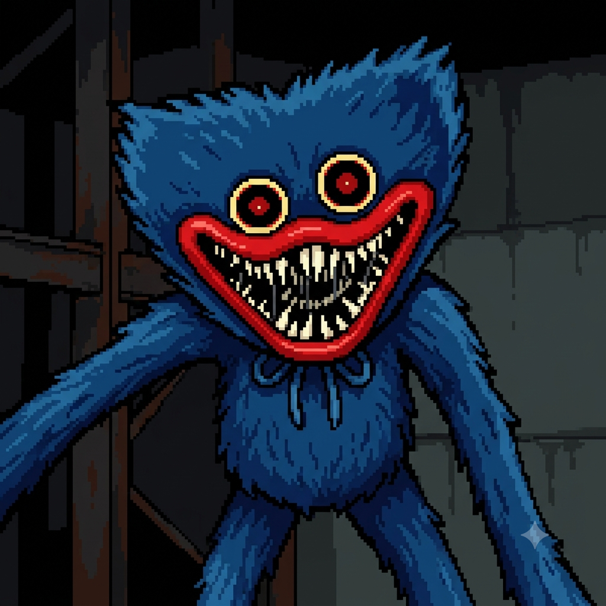
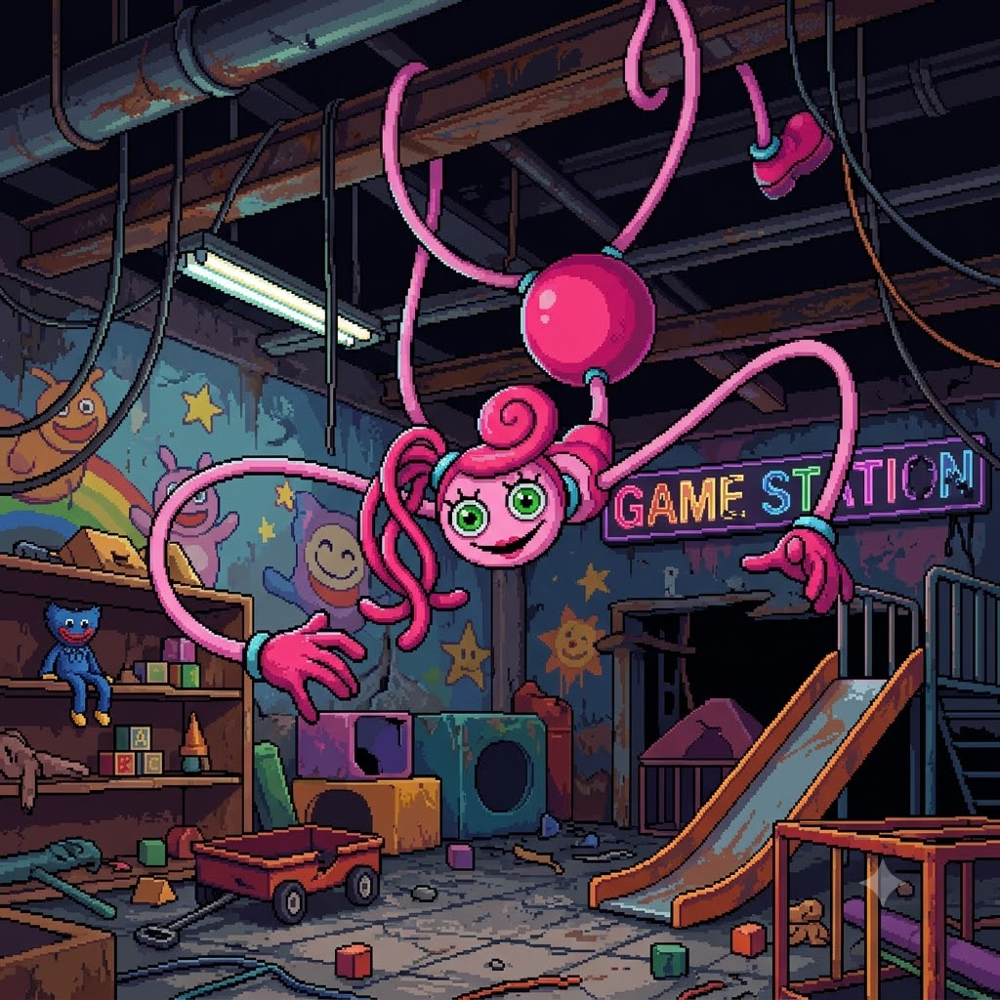
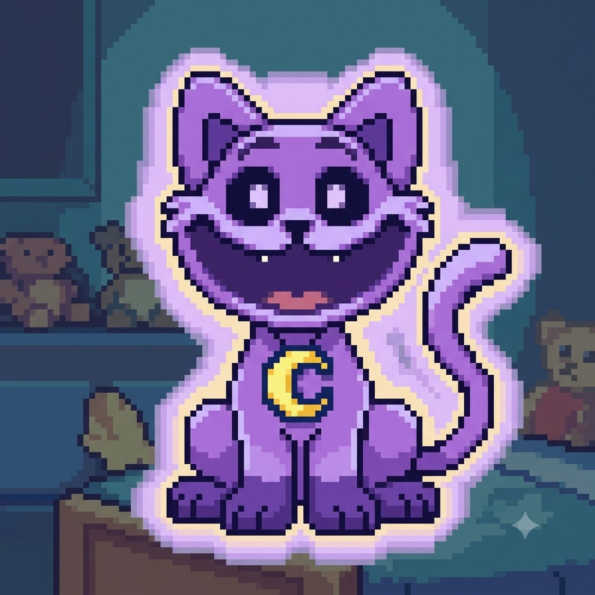
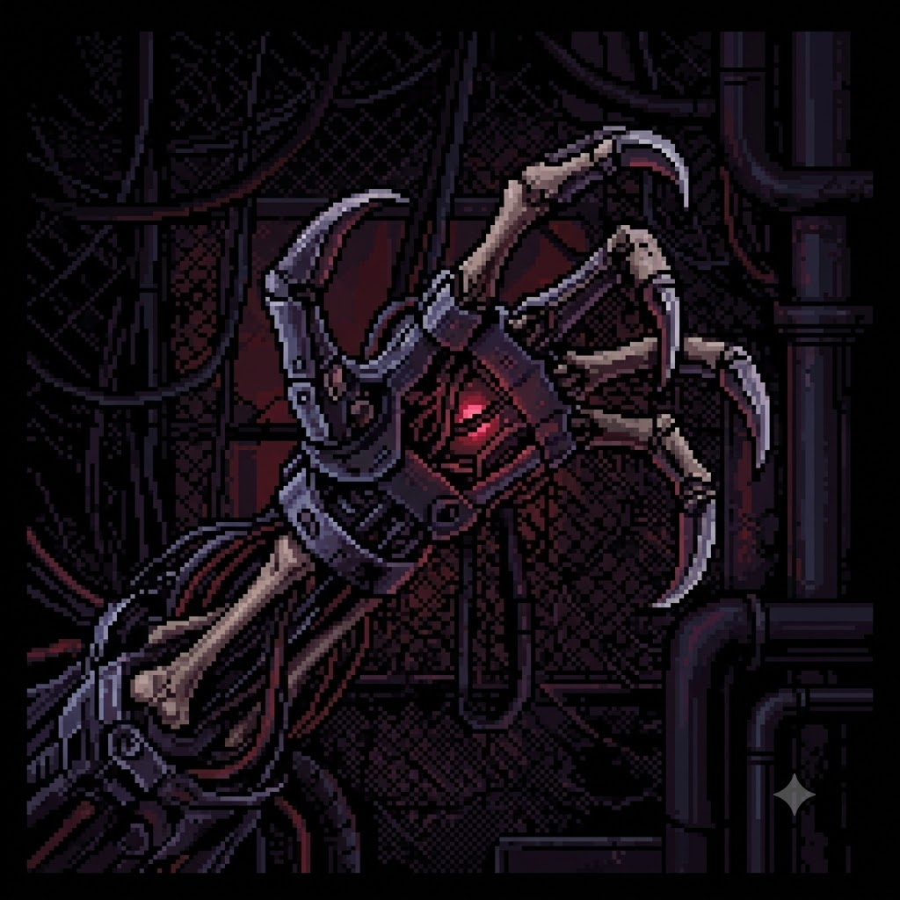
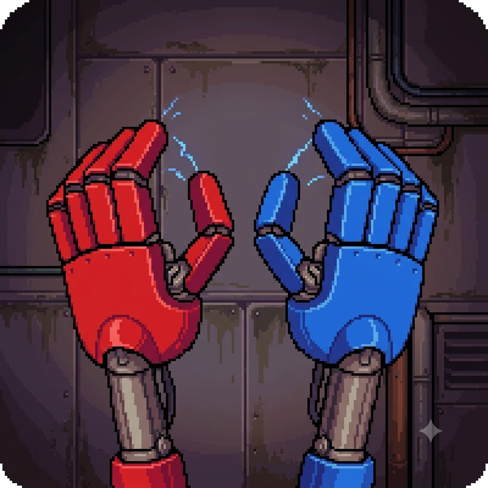

Bem-vindos à Fábrica!
Por: Thiago Poleza de Souza
Prepare-se para entrar no que sobrou da maior fábrica de brinquedos do mundo. O que aconteceu com os funcionários em 1991?
Explorando os mistérios e os brinquedos de Poppy Playtime

Por: Thiago Poleza de Souza
Prepare-se para entrar no que sobrou da maior fábrica de brinquedos do mundo. O que aconteceu com os funcionários em 1991?

Por: Thiago Poleza de Souza
Huggy Wuggy foi desenhado para abraçar, mas sua versão real é muito mais perigosa. Ele é o guardião da entrada da fábrica.
Fonte: Playtime Files

Por: Thiago Poleza de Souza
No Capítulo 2, conhecemos Mommy Long Legs. Ela odeia estranhos, mas adora jogos mortais. Cuidado para não esticar demais a sorte!
Fonte: Mob Entertainment

Por: Thiago Poleza de Souza
O líder dos Smiling Critters usa um gás alucinógeno para colocar suas vítimas para dormir. O Capítulo 3 trouxe pesadelos reais.

Por: Thiago Poleza de Souza
Ele é a mente por trás da rebelião. O Protótipo está coletando partes de outros brinquedos para se tornar algo invencível.
Fonte: VHS Tapes

Por: Thiago Poleza de Souza
Sem o GrabPack, você não duraria um minuto. Ele serve para puxar objetos pesados e conduzir eletricidade pela fábrica.